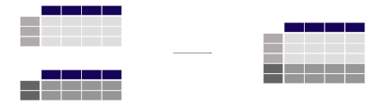

In [1]: import pandas as pd
-
Air quality Nitrate data
For this tutorial, air quality data about \(NO_2\) is used, made available by OpenAQ and downloaded using the py-openaq package.
The
To raw dataair_quality_no2_long.csvdata set provides \(NO_2\) values for the measurement stations FR04014, BETR801 and London Westminster in respectively Paris, Antwerp and London.In [2]: air_quality_no2 = pd.read_csv("data/air_quality_no2_long.csv", ...: parse_dates=True) ...: In [3]: air_quality_no2 = air_quality_no2[["date.utc", "location", ...: "parameter", "value"]] ...: In [4]: air_quality_no2.head() Out[4]: date.utc location parameter value 0 2019-06-21 00:00:00+00:00 FR04014 no2 20.0 1 2019-06-20 23:00:00+00:00 FR04014 no2 21.8 2 2019-06-20 22:00:00+00:00 FR04014 no2 26.5 3 2019-06-20 21:00:00+00:00 FR04014 no2 24.9 4 2019-06-20 20:00:00+00:00 FR04014 no2 21.4
-
Air quality Particulate matter data
For this tutorial, air quality data about Particulate matter less than 2.5 micrometers is used, made available by OpenAQ and downloaded using the py-openaq package.
The
To raw dataair_quality_pm25_long.csvdata set provides \(PM_{25}\) values for the measurement stations FR04014, BETR801 and London Westminster in respectively Paris, Antwerp and London.In [5]: air_quality_pm25 = pd.read_csv("data/air_quality_pm25_long.csv", ...: parse_dates=True) ...: In [6]: air_quality_pm25 = air_quality_pm25[["date.utc", "location", ...: "parameter", "value"]] ...: In [7]: air_quality_pm25.head() Out[7]: date.utc location parameter value 0 2019-06-18 06:00:00+00:00 BETR801 pm25 18.0 1 2019-06-17 08:00:00+00:00 BETR801 pm25 6.5 2 2019-06-17 07:00:00+00:00 BETR801 pm25 18.5 3 2019-06-17 06:00:00+00:00 BETR801 pm25 16.0 4 2019-06-17 05:00:00+00:00 BETR801 pm25 7.5
How to combine data from multiple tables?#
Concatenating objects#
I want to combine the measurements of \(NO_2\) and \(PM_{25}\), two tables with a similar structure, in a single table.
In [8]: air_quality = pd.concat([air_quality_pm25, air_quality_no2], axis=0) In [9]: air_quality.head() Out[9]: date.utc location parameter value 0 2019-06-18 06:00:00+00:00 BETR801 pm25 18.0 1 2019-06-17 08:00:00+00:00 BETR801 pm25 6.5 2 2019-06-17 07:00:00+00:00 BETR801 pm25 18.5 3 2019-06-17 06:00:00+00:00 BETR801 pm25 16.0 4 2019-06-17 05:00:00+00:00 BETR801 pm25 7.5
The
concat()function performs concatenation operations of multiple tables along one of the axes (row-wise or column-wise).
By default concatenation is along axis 0, so the resulting table combines the rows of the input tables. Let’s check the shape of the original and the concatenated tables to verify the operation:
In [10]: print('Shape of the ``air_quality_pm25`` table: ', air_quality_pm25.shape)
Shape of the ``air_quality_pm25`` table: (1110, 4)
In [11]: print('Shape of the ``air_quality_no2`` table: ', air_quality_no2.shape)
Shape of the ``air_quality_no2`` table: (2068, 4)
In [12]: print('Shape of the resulting ``air_quality`` table: ', air_quality.shape)
Shape of the resulting ``air_quality`` table: (3178, 4)
Hence, the resulting table has 3178 = 1110 + 2068 rows.
Note
The axis argument will return in a number of pandas
methods that can be applied along an axis. A DataFrame has two
corresponding axes: the first running vertically downwards across rows
(axis 0), and the second running horizontally across columns (axis 1).
Most operations like concatenation or summary statistics are by default
across rows (axis 0), but can be applied across columns as well.
Sorting the table on the datetime information illustrates also the
combination of both tables, with the parameter column defining the
origin of the table (either no2 from table air_quality_no2 or
pm25 from table air_quality_pm25):
In [13]: air_quality = air_quality.sort_values("date.utc")
In [14]: air_quality.head()
Out[14]:
date.utc location parameter value
2067 2019-05-07 01:00:00+00:00 London Westminster no2 23.0
1003 2019-05-07 01:00:00+00:00 FR04014 no2 25.0
100 2019-05-07 01:00:00+00:00 BETR801 pm25 12.5
1098 2019-05-07 01:00:00+00:00 BETR801 no2 50.5
1109 2019-05-07 01:00:00+00:00 London Westminster pm25 8.0
In this specific example, the parameter column provided by the data
ensures that each of the original tables can be identified. This is not
always the case. The concat function provides a convenient solution
with the keys argument, adding an additional (hierarchical) row
index. For example:
In [15]: air_quality_ = pd.concat([air_quality_pm25, air_quality_no2], keys=["PM25", "NO2"])
In [16]: air_quality_.head()
Out[16]:
date.utc location parameter value
PM25 0 2019-06-18 06:00:00+00:00 BETR801 pm25 18.0
1 2019-06-17 08:00:00+00:00 BETR801 pm25 6.5
2 2019-06-17 07:00:00+00:00 BETR801 pm25 18.5
3 2019-06-17 06:00:00+00:00 BETR801 pm25 16.0
4 2019-06-17 05:00:00+00:00 BETR801 pm25 7.5
Note
The existence of multiple row/column indices at the same time has not been mentioned within these tutorials. Hierarchical indexing or MultiIndex is an advanced and powerful pandas feature to analyze higher dimensional data.
Multi-indexing is out of scope for this pandas introduction. For the
moment, remember that the function reset_index can be used to
convert any level of an index to a column, e.g.
air_quality.reset_index(level=0)
Feel free to dive into the world of multi-indexing at the user guide section on advanced indexing.
More options on table concatenation (row and column
wise) and how concat can be used to define the logic (union or
intersection) of the indexes on the other axes is provided at the section on
object concatenation.
Join tables using a common identifier#

Add the station coordinates, provided by the stations metadata table, to the corresponding rows in the measurements table.
Warning
The air quality measurement station coordinates are stored in a data file
air_quality_stations.csv, downloaded using the py-openaq package.In [17]: stations_coord = pd.read_csv("data/air_quality_stations.csv") In [18]: stations_coord.head() Out[18]: location coordinates.latitude coordinates.longitude 0 BELAL01 51.23619 4.38522 1 BELHB23 51.17030 4.34100 2 BELLD01 51.10998 5.00486 3 BELLD02 51.12038 5.02155 4 BELR833 51.32766 4.36226
Note
The stations used in this example (FR04014, BETR801 and London Westminster) are just three entries enlisted in the metadata table. We only want to add the coordinates of these three to the measurements table, each on the corresponding rows of the
air_qualitytable.In [19]: air_quality.head() Out[19]: date.utc location parameter value 2067 2019-05-07 01:00:00+00:00 London Westminster no2 23.0 1003 2019-05-07 01:00:00+00:00 FR04014 no2 25.0 100 2019-05-07 01:00:00+00:00 BETR801 pm25 12.5 1098 2019-05-07 01:00:00+00:00 BETR801 no2 50.5 1109 2019-05-07 01:00:00+00:00 London Westminster pm25 8.0
In [20]: air_quality = pd.merge(air_quality, stations_coord, how="left", on="location") In [21]: air_quality.head() Out[21]: date.utc ... coordinates.longitude 0 2019-05-07 01:00:00+00:00 ... -0.13193 1 2019-05-07 01:00:00+00:00 ... 2.39390 2 2019-05-07 01:00:00+00:00 ... 2.39390 3 2019-05-07 01:00:00+00:00 ... 4.43182 4 2019-05-07 01:00:00+00:00 ... 4.43182 [5 rows x 6 columns]
Using the
merge()function, for each of the rows in theair_qualitytable, the corresponding coordinates are added from theair_quality_stations_coordtable. Both tables have the columnlocationin common which is used as a key to combine the information. By choosing theleftjoin, only the locations available in theair_quality(left) table, i.e. FR04014, BETR801 and London Westminster, end up in the resulting table. Themergefunction supports multiple join options similar to database-style operations.
Add the parameters’ full description and name, provided by the parameters metadata table, to the measurements table.
Warning
The air quality parameters metadata are stored in a data file
air_quality_parameters.csv, downloaded using the py-openaq package.In [22]: air_quality_parameters = pd.read_csv("data/air_quality_parameters.csv") In [23]: air_quality_parameters.head() Out[23]: id description name 0 bc Black Carbon BC 1 co Carbon Monoxide CO 2 no2 Nitrogen Dioxide NO2 3 o3 Ozone O3 4 pm10 Particulate matter less than 10 micrometers in... PM10
In [24]: air_quality = pd.merge(air_quality, air_quality_parameters, ....: how='left', left_on='parameter', right_on='id') ....: In [25]: air_quality.head() Out[25]: date.utc ... name 0 2019-05-07 01:00:00+00:00 ... NO2 1 2019-05-07 01:00:00+00:00 ... NO2 2 2019-05-07 01:00:00+00:00 ... NO2 3 2019-05-07 01:00:00+00:00 ... PM2.5 4 2019-05-07 01:00:00+00:00 ... NO2 [5 rows x 9 columns]
Compared to the previous example, there is no common column name. However, the
parametercolumn in theair_qualitytable and theidcolumn in theair_quality_parameters_nameboth provide the measured variable in a common format. Theleft_onandright_onarguments are used here (instead of juston) to make the link between the two tables.
pandas supports also inner, outer, and right joins. More information on join/merge of tables is provided in the user guide section on database style merging of tables. Or have a look at the comparison with SQL page.
REMEMBER
Multiple tables can be concatenated both column-wise and row-wise using the
concatfunction.For database-like merging/joining of tables, use the
mergefunction.
See the user guide for a full description of the various facilities to combine data tables.